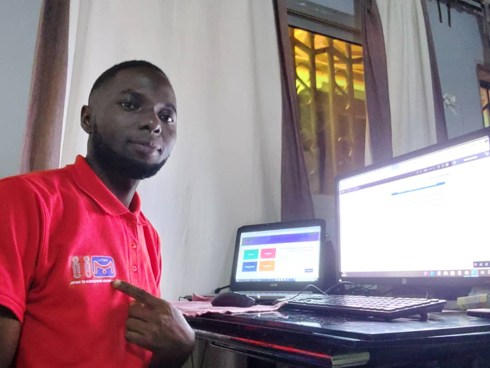

BEBE NATHAN
WEB DESIGNER
- Tél : +237 699318917
- EMail : ffgire@gmail.com
- Localisation : Douala - PK10
Compétences
Word :
Excel :
Infographie :
Dev web :
Langue
-
Français :
-
Anglais :
EXPERIENCE PROFESSIONNEL
Développeur web | MEDIASYSCO
- Mai 2017 - Actuellement
-
Integration des solution web, developpement des application mobile cas de l'application ASK TA TCHOP.
Developpemnt web, Sécurité et Réseau informatique | IPME, IPMAC, MEDIASYSCO, ISTAMA
- Jan 2019 - Actuellement
Enseignant informatique en Java, PHP, PYTHON, react.js, nodeJs Wordpress
Freelance| Maintenance Informatique et Digital
- Avril 2019 - Actuellement
- Conception des chartes graphique, visuel de communication pour les entreprises SAREPTA BTP, DONALD COMPUTER, SMART WORLD, MEDIASYSCO,etc...
FORMATION
Ing Génie Informatique | IAI
- Mai 2015 - 2020
-
Programmation web, genie logiciel, robotique
DEUG INFORMATIQUE Faculté des sciences de l'université de Douala
- Sept 2013 - Août 2015
Informatique fondamental, programmation orientée objet, Maths, économie des sociétés et générales
BAC Scientifique au collège INTAC de Douala
- 2011 - 2012
- Mathématique et science physique